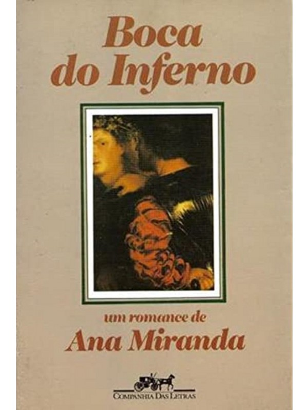
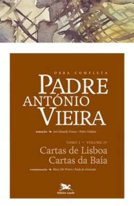

Barroco
Os temas barrocos frequentemente exploram a dualidade entre a vida e a morte, o efêmero e o eterno, além de uma profunda reflexão sobre a condição humana.
As obras barrocas buscam provocar o espectador ou leitor, instigando uma reflexão sobre a existência e a espiritualidade. A estética barroca também foi
influenciada pelo surgimento das ciências e pela nova visão de mundo que estava emergindo, refletindo tanto a grandiosidade divina quanto a fragilidade da vida humana.
.
Principais características do Barroco
1. Dualismo: Uma das marcas do Barroco é o confronto entre forças opostas, como pecado e perdão, corpo e alma, razão e emoção.
Os autores barrocos expressavam a angústia e o conflito do homem dividido entre esses polos.
.
2. Linguagem Rebuscada: O estilo barroco é marcado pelo uso de uma linguagem rica em figuras de linguagem, como metáforas,
antíteses, hipérboles e paradoxos.Intenção era gerar impacto e expressar a complexidade dos sentimentos humanos.
.
3. Religiosidade: A influência da Igreja Católica, especialmente com a Contrarreforma, era muito presente no Barroco. A literatura
da época frequentemente abordava temas religiosos, exaltando a fé cristã e o poder de Deus.
.
4. Pessimismo e Contradições: Os autores barrocos expressavam uma visão pessimista da vida, marcada por incertezas e angústias.
Havia uma constante reflexão sobre a da vida, a efemeridade das conquistas materiais e o medo da morte.
.
Contexto histórico
O Barroco surge no século XVII, durante um período de grandes transformações na Europa, como a Contrarreforma, que fortaleceu a Igreja
Católica em resposta ao Protestantismo. No Brasil Igreja Católica em resposta ao Protestantismo. No Brasil o Barroco se desenvolveu durante
o período colonial, refletindo as tensões entre a cultura europeia e as realidades locais. A forte influência religiosa e a presença dos jesuítas
são marcantes na produção barroca.
.
AUTORES E OBRAS
Gregório de Matos: "Boca do Inferno"
Padre António Vieira: "Cartas de Lisboa, Cartas da Baía"
Conclusão
O Barroco é um estilo que reflete as contradições de sua época, explorando a tensão entre o divino e o humano, a vida e a morte,
o efêmero e o eterno. A complexidade das formas e a profundidade dos temas marcam essa fase importante da literatura brasileira
e portuguesa, estabelecendo uma base para o desenvolvimento literário nos períodos subsequentes.Autores como Gregório de Matos e Padre
António Vieira se destacam no Barroco brasileiro, abordando temas religiosos e sociais de maneira intensa e estilisticamente elaborada.